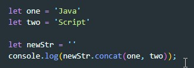
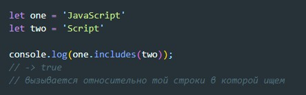
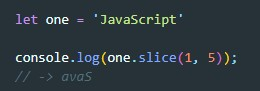
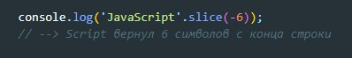
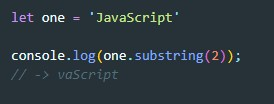
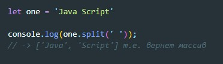
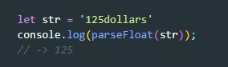
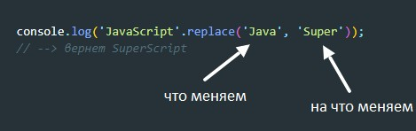
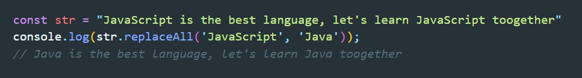

charAt() - Возвращает символ по указанному индексу.
concat() - Объединяет текст двух строк и возвращает новую строку.
includes() - Определяет, находится ли строка внутри другой строки
slice() - Извлекает часть строки и возвращает новую строку.
если методу slice задать отрицательное значение то он вернет количество символов с конца строки
substring() - возвращает указанное количество символов из строки, начиная с указанной позиции
split() - разбивает объект String на массив строк путём разделения строки указанной подстрокой.
toLowerCase() - Приводит символы в строке к нижнему регистру
toUpperCase() - Приводит символы в строке к верхнему регистру
trim() - Обрезает пробельные символы в начале и в конце строки
trimLeft() - Обрезает пробельные символы с левой стороны строки.
trimRight() - Обрезает пробельные символы с правой стороны строки.
parseFloat() - Преобразует строку в число до первого буквенного знака
replace() - этот метод заменяет учасок строки на то что ему передадут вторым аргументом
replaceAll() - этот метод в отличии от replace заменяет все участки строки
